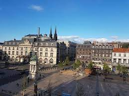

Ici, vous pouvez retrouvez des plannings indiquant les disponibilités des activités
| Catégorie | Créneaux | Lieux | Photos |
| Poussins, Pupilles et Benjamins (7 à 12 ans) | mercredi de 14h à 16h | stade des Cézeaux | |
| Minimes, Cadets (13 à 16 ans) | 14h30 à 17h | stade des Cézeaux | |
| Juniors, Espoirs: 17 à 22 ans) | samedi de 9h à 12h30 | place de Jaude |  |
| Confirmés (22 ans et plus) | samedi de 13h30 à 17h | place de Jaude |
| 8h-12h | 13h-19h | |||
| 8h-10h | 10h-12h | 13h-16h | 16h-19h | |
| lundi | fermé | fermé | ouvert | ouvert |
| mardi | ouvert | ouvert | fermé | fermé |
| mercredi | ouvert | ouvert | ouvert | ouvert |
| jeudi | fermé | fermé | ouvert | ouvert |
| vendredi | ouvert | ouvert | fermé | ouvert |
| samedi | ouvert | ouvert | fermé | fermé |
Planning salle de sport place Jaude
| 8h-12h | 13h-19h | |||
| 8h-10h | 10h-12h | 13h-16h | 16h-19h | |
| lundi | fermé | ouvert | ouvert | ouvert |
| mardi | ouvert | ouvert | fermé | ouvert |
| mercredi | ouvert | ouvert | ouvert | ouvert |
| jeudi | ouvert | ouvert | fermé | fermé |
| vendredi | ouvert | ouvert | ouvert | ouvert |
| samedi | fermé | fermé | ouvert | ouvert |